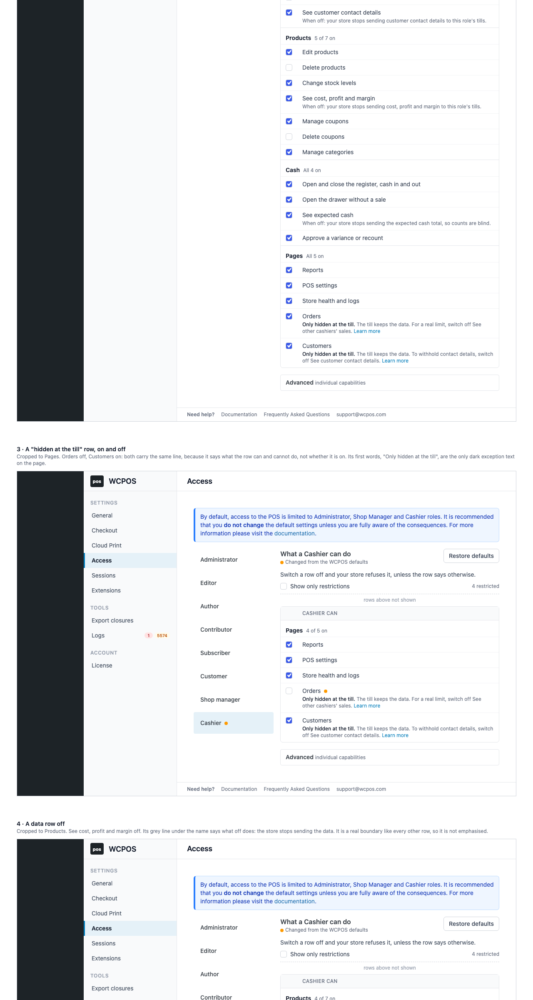
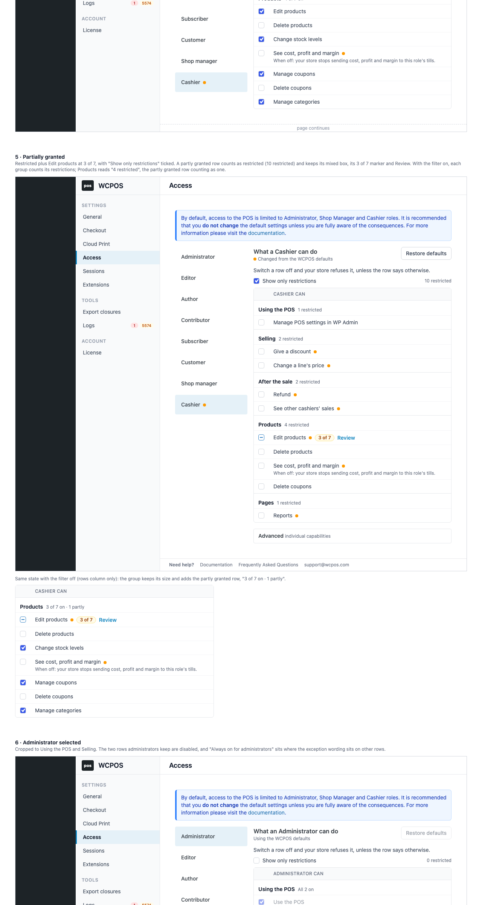
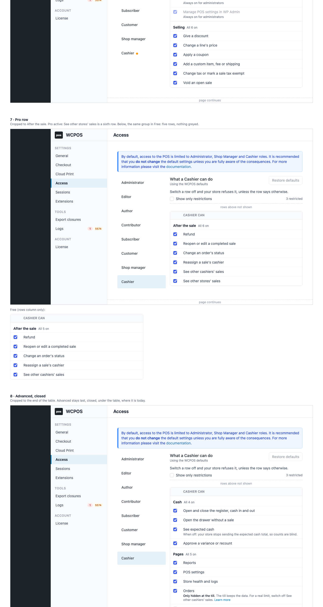
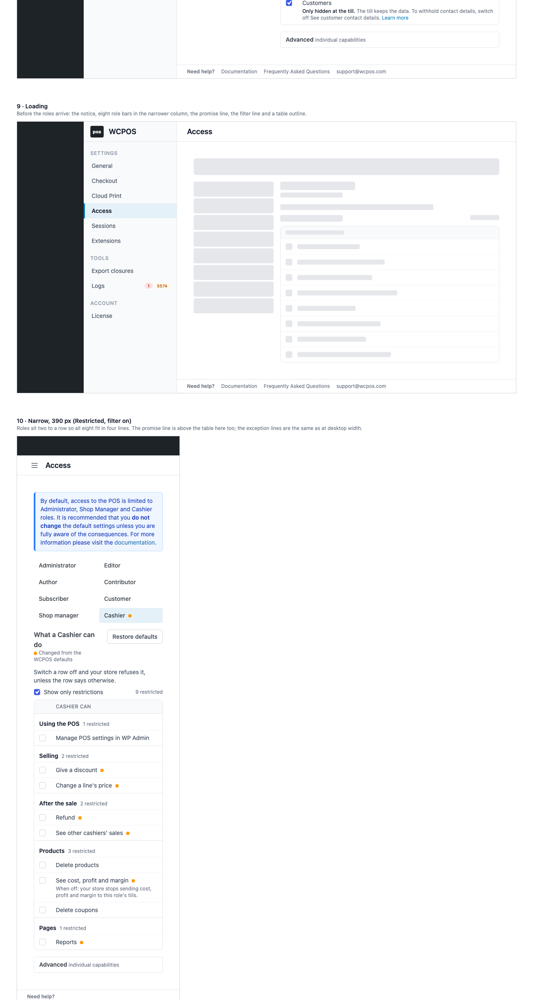
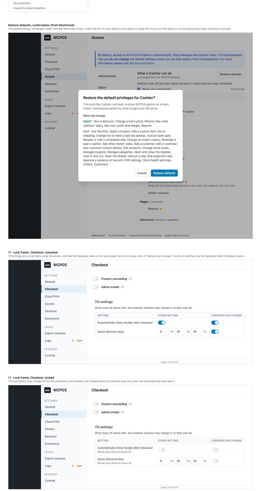
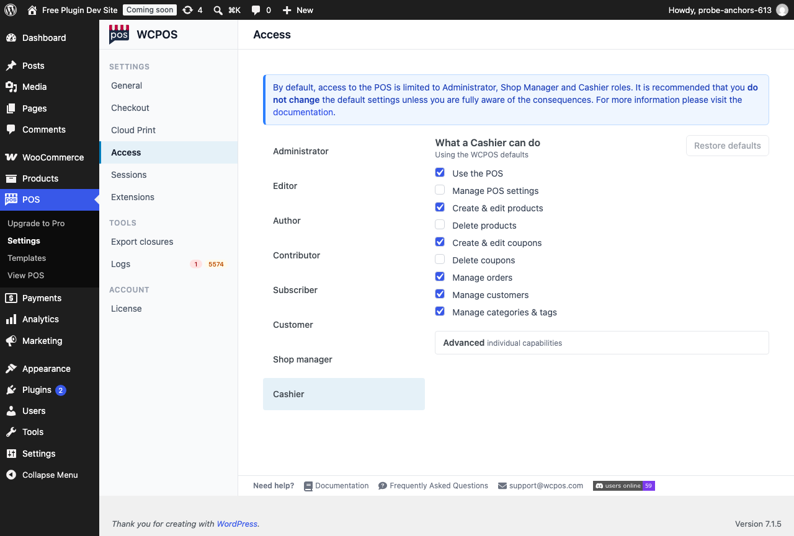
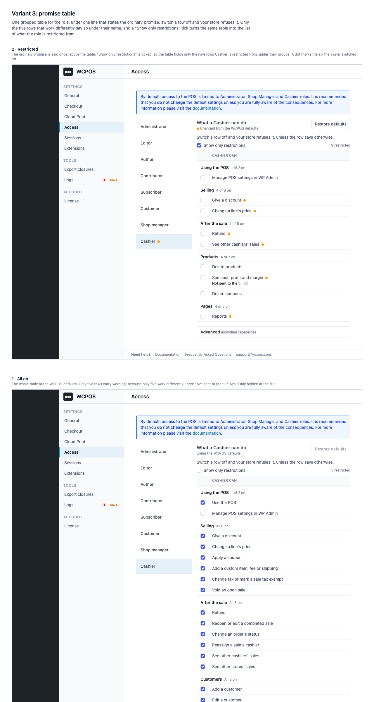
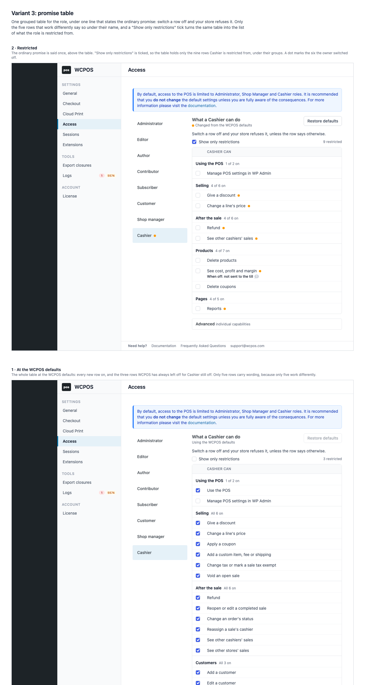
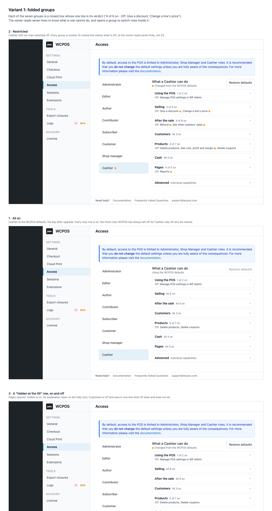
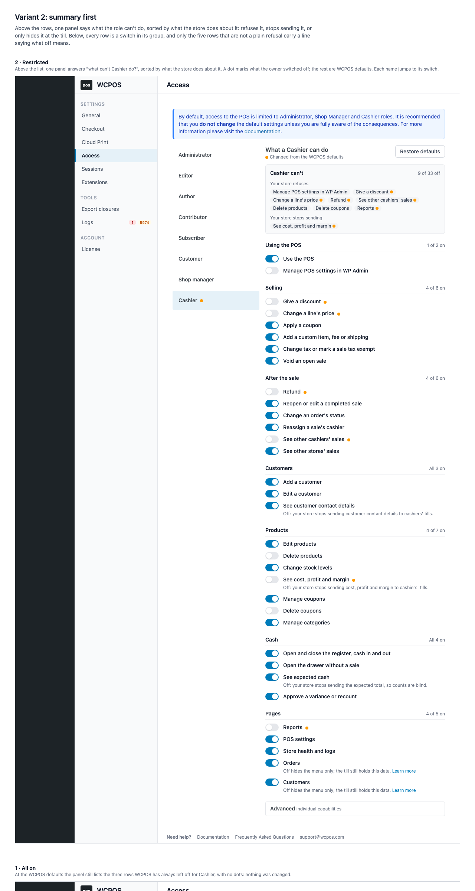

Access screen permissions: mockup
A mockup of WP Admin › POS › Settings › Access for v2.2.0. No app code changed.
Pick: V3, the promise table.
Live pages: V3 (picked) · V1 · V2 · rounds.md · brief.md
The picked variant: V3, the promise table





What changed from today's screen

What changed across the rounds
- Round 1: checkbox paint corrected to the system's (all variants); the ordinary promise stated once above the table and removed from 28 rows; filter renamed "Show only restrictions"; Restore defaults dialog frame added.
- Round 2: exception wording phrased as a consequence ("When off: …"); frame 1 retitled "At the WCPOS defaults"; Orders and Customers help names the control that sets a real limit; mixed checkbox back to the live value.
- Round 3: tooltips opened below their icon; the three data rows' line in the grey caption style and only "only hidden at the till" dark; an off Orders or Customers row reduced to one line; Customers help corrected; a group with a partly granted row counted as "3 on · 1 partly".
- Final polish: no tooltips on the five exception rows, each line in the row at every width; one phrase for the weaker tier in both states; one counting form ("3 of 7 on · 1 partly", "2 restricted" with the filter on); the lock column is a Toggle, as the Gateways table's Enabled column.


The two options not picked


Scores
Round 0: three variants, Sol
| Category | V1 Folded | V2 Summary | V3 Table | Baseline Access | StackAI | Twenty | Zoho | System Checkout | System General |
|---|---|---|---|---|---|---|---|---|---|
| Hierarchy | 8 | 7.5 | 8 | 7.5 | 8 | 8 | 7.5 | 7.5 | 8 |
| Typography | 7.5 | 7.5 | 7.5 | 8 | 8 | 8 | 7.5 | 8 | 8 |
| Spacing and alignment | 7 | 7.5 | 8 | 7.5 | 8 | 8 | 8 | 7.5 | 8 |
| Colour and contrast (light) | 8 | 8 | 8 | 8 | 8.5 | 8 | 8 | 8 | 8 |
| Iconography and indicators | 6.5 | 6 | 7 | 7.5 | 7.5 | 8 | 7 | 7.5 | 7.5 |
| Consistency | 5 | 8 | 5 | 9 | 8 | 8 | 8 | 9 | 9 |
| Clarity for the person in the brief | 7 | 7 | 8 | 5.5 | 5 | 5 | 6 | 7 | 7.5 |
| Density | 8.5 | 6 | 7.5 | 8 | 7 | 7.5 | 7.5 | 7 | 7.5 |
| States covered | 8 | 7 | 8 | 3 | 2.5 | 2.5 | 2 | 2 | 2 |
| Average | 7.3 | 7.2 | 7.4 | 7.1 | 6.9 | 7.0 | 6.8 | 7.1 | 7.3 |
Round 1: V3, Sol
| Category | V3 r1 | V3 r0 | Baseline Access | StackAI | Twenty | Zoho | System Checkout | System General |
|---|---|---|---|---|---|---|---|---|
| Hierarchy | 8 | 7.5 | 7 | 8 | 8 | 7.5 | 7.5 | 8 |
| Typography | 8 | 7.5 | 8 | 8 | 8 | 8 | 8 | 8 |
| Spacing and alignment | 8 | 7.5 | 7.5 | 8 | 8 | 8 | 7.5 | 8 |
| Colour and contrast (light) | 8.5 | 8 | 8.5 | 8.5 | 8 | 7.5 | 8.5 | 8.5 |
| Iconography and indicators | 7.5 | 7 | 7.5 | 8 | 8 | 7 | 7.5 | 7.5 |
| Consistency | 8.5 | 5 | 9 | 8.5 | 8 | 8 | 9 | 9 |
| Clarity for the person in the brief | 7 | 7.5 | 6 | 6.5 | 6.5 | 6.5 | 7 | 7.5 |
| Density | 8 | 7 | 6.5 | 8 | 7.5 | 7.5 | 7 | 8 |
| States covered | 8 | 7.5 | 3 | 2 | 2 | 2 | 2.5 | 2.5 |
| Average | 7.9 | 7.2 | 7.0 | 7.3 | 7.1 | 6.9 | 7.2 | 7.4 |
Round 2: V3, Sol and Opus
| Category | Sol: V3 r2 | Sol: V3 r0 | Sol: Baseline | Opus: V3 r2 | Opus: V3 r0 | Opus: Baseline |
|---|---|---|---|---|---|---|
| Hierarchy | 8 | 8 | 7.5 | 8 | 7 | 6 |
| Typography | 8 | 7.5 | 8 | 7 | 7 | 7 |
| Spacing and alignment | 8 | 8 | 8 | 7.5 | 7.5 | 6.5 |
| Colour and contrast (light) | 8 | 8 | 8 | 7.5 | 6.5 | 7 |
| Iconography and indicators | 8 | 7 | 7.5 | 7 | 7 | 6 |
| Consistency | 9 | 5 | 9 | 7.5 | 5 | 8 |
| Clarity for the person in the brief | 8 | 7 | 5.5 | 7.5 | 7.5 | 5 |
| Density | 8 | 8 | 7 | 8 | 6.5 | 6 |
| States covered | 8.5 | 8 | 2.5 | 8.5 | 8 | 2 |
| Average | 8.17 | 7.39 | 7.00 | 7.6 | 6.9 | 5.9 |
Round 3 (final): V3, Sol, Opus and Fable
| Category | Sol r3 | Sol r0 | Sol baseline | Opus r3 | Opus r0 | Opus baseline | Fable r3 | Fable r0 | Fable baseline |
|---|---|---|---|---|---|---|---|---|---|
| Hierarchy | 8 | 7.5 | 7.5 | 8 | 6.5 | 6 | 7.5 | 6.5 | 6 |
| Typography | 8 | 8 | 8 | 7.5 | 7 | 7 | 7 | 6.5 | 6.5 |
| Spacing and alignment | 8 | 8 | 7.5 | 7.5 | 7.5 | 7 | 7.5 | 7 | 6 |
| Colour and contrast (light) | 8.5 | 8 | 8.5 | 8 | 6.5 | 7 | 7.5 | 6 | 6.5 |
| Iconography and indicators | 8.5 | 7.5 | 8 | 7 | 6.5 | 6 | 6.5 | 6 | 5 |
| Consistency | 8.5 | 5 | 9 | 7.5 | 5 | 8 | 7.5 | 5 | 7 |
| Clarity for the person in the brief | 8 | 7 | 6.5 | 8 | 7 | 5.5 | 7.5 | 6.5 | 5 |
| Density | 8 | 7 | 7.5 | 8 | 6.5 | 6 | 7.5 | 6.5 | 5 |
| States covered | 9 | 7.5 | 4 | 9 | 8.5 | 2.5 | 8.5 | 7 | 3 |
| Average | 8.3 | 7.3 | 7.3 | 7.8 | 6.8 | 6.1 | 7.4 | 6.3 | 5.6 |